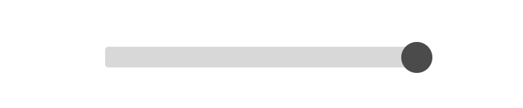
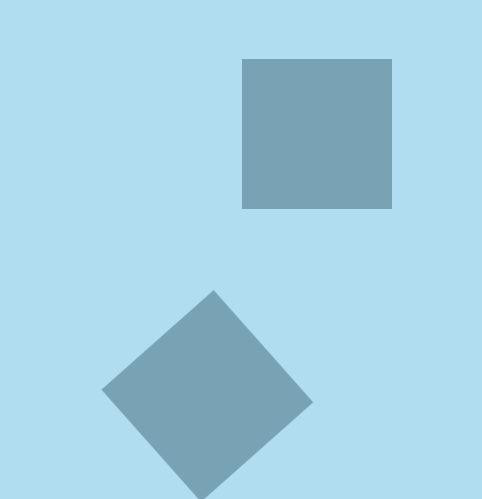
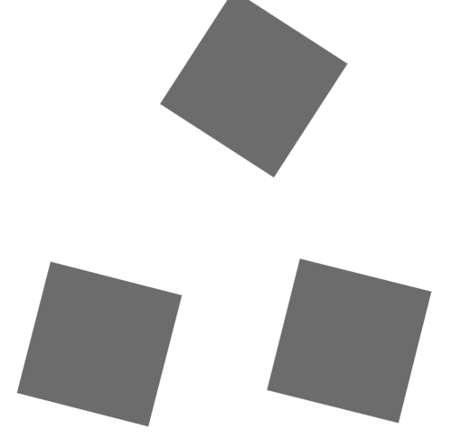

アニメーションの始まりを指定する。
// gsap.to(対象とする要素, duration（存続期間/秒）, 動きを設定する関数)
gsap.from(".box", 2, {
// どういうふうに終わるのかを設定する。
x: "-10rem",
y: "-10rem"
})
アニメーションの終わりを指定する。
// gsap.to(対象とする要素, duration／存続期間（秒）, 動きを設定する関数)
gsap.to(".box", 2, {
// どういうふうに終わるのかを設定する。
x: "10rem",
y: "10rem"
})
アニメーションの始まりを指定する。
// gsap.to(対象とする要素, duration（存続期間/秒）, 動きを設定する関数)
gsap.fromTo(".box", 2,
{
// from 始まり
x: "-10rem",
y: "10rem"
},
{
// to 終わり
x: "0rem",
y: "0rem"
}
)
fromTo、jsを読み込むまでの一瞬、最初の場所に戻ってから指定位置に位置どりする挙動がある。これを回避する方法は、
// アニメーションの始まりを指定する。
// gsap.to(対象とする要素, 動きを設定する関数)
// 最初の位置を変数に格納する。これはオブジェクト。
const firstPosition = {
x: '-10rem',
y: '-10rem'
}
// オブジェクトのインスタンスの呼出。
gsap.set(".box", {
x: firstPosition.x,
y: firstPosition.y
}
)
// 1000mm秒後（1秒後）に動かす。
setTimeout(() => {
gsap.fromTo(".box", 1, {
x: firstPosition.x,
y: firstPosition.y
},
{
x: "10rem",
y: "10rem"
})
}, 3000)
duration => アニメーションにかかる時間 durationは、オブジェクトに書くか、
gsap.to(".box", {
x: "20rem",
duration: 2
})
第二引数に設定する方法がある。deleyとの併用を考えると引数に書く方法は習慣にはしない。
// gsap.to(".box", 2, {
// x: "20rem",
// })
deley => アニメーションを延滞させる時間
gsap.to(".box", {
x: "20rem",
duration: 2,
delay: 2
})
GSAPに用意されているCSSのtransformと同じプロパティ
gsap.to(".box", 2, {
x: "10rem",
y: "10rem"
})
// センターセンターで拡大
scale: 1.5
// x軸センター方向へ拡大
scaleX: 2
// y軸センター方向へ拡大
scaleY: .5
// センターを支点に回転
rotation: "90deg"
// x軸で回転
rotationX: "180deg"
// y軸で回転
rotationY: "180deg"
// こんな設定すると面白い効果になるけど動きをコントロールしにくい。
skewX: "360deg",
skewY: "-360deg"
gsap.to (".box", 2, {
backgroundColor: "red",
borderRadius: "50%",
border: "2rem solid #eee",
boxShadow: "0 0 2rem red",
})
CSSのtransform-originをGSAPで設定。 アニメーションの支点を左上座標（x: 0%, y: 0%）として座標を任意に設定できる。
gsap.to(".box", 2, {
rotation: "360deg",
transformOrigin: "50% 100%",
scaleX: 0
})
最終形態を透明にしても要素はまだ変形された位置に存在する。
その要素の下へアクセスする必要がある場合、例えばクリックして何かするというような動作ができなくなる。
これを回避するために、visibility: hidden; を設定する。
ついでに、GSAPで関数を定義して実行させるやり方も覚える。
// gsap.to(".box", 2, {
// scale: 3,
// opacity: 0,
// onComplete: function() {
// document.querySelector(".box").style.visibility = "hidden"
// }
// })
GSAPには、予めプロパティが用意されている。
gsap.to(".box", 2, {
scale: 3,
autoAlpha: 0
})
バラバラに動かせる関数
set：Y軸方向10rem下、透明
gsap.set("#articles > .wrapper", {
y: "10rem",
opacity: 0
})
to：Y軸方向戻して現す + stagger属性で、整然とバラバラにする
gsap.to("#articles > .wrapper", 2, {
y: 0,
opacity: 1,
stagger: .1
})
to：stagger属性に、オブジェクトで値を入れて効果をつけていく 何秒ずらしてそれぞれの要素を表示するかを指示 多分、本体で指定している『2秒』については無視されるのかな。
gsap.to("#articles > .wrapper", 2, {
y: 0,
opacity: 1,
stagger: {
each: .5
}
})
指定した秒数間で含まれる全要素をずらしてする ここもその可能性あり。
gsap.to("#articles > .wrapper", 2, {
y: 0,
opacity: 1,
stagger: {
amount: 2
}
})
each指定とは逆方向で再生する
gsap.to("#articles > .wrapper", 2, {
y: 0,
opacity: 1,
stagger: {
each: .5, from: "end"
}
})
中央から端へ 出現順は、...4,3,2,1,2,3,4...
gsap.to("#articles > .wrapper", 2, {
y: 0,
opacity: 1,
stagger: {
each: .2, from: "center"
}
})
端から中央へ 出現順は、...1,2,3,4,3,2,1...
gsap.to("#articles > .wrapper", 2, {
y: 0,
opacity: 1,
stagger: {
each: .2, from: "edges"
}
})
ランダムに 上・下の動きの方が効果的
gsap.to("#articles > .wrapper", 2, {
y: 0,
opacity: 1,
stagger: {
each: .1, from: "random"
}
})

gsap.to('.box', 1, {
left: '100%',
delay: 1
}).repeat(5)
gsap.to('.box', 1, {
left: '100%',
delay: 1
}).repeat(-1)
gsap.to('.box', 1, {
left: '100%',
delay: 1
}).repeat(-1).repeatDelay(2)
往復に見せたい繰り返しは、yoyo()関数の引数にtrue
gsap.to(".box", 1, {
left: "100%",
delay: 1
}).repeat(-1).yoyo(true)
gsap.to(".box", 1, {
left: "100%",
// yoyoEase: true === ease: "power1.out" 同じ
// yoyoEase: "power1.out" これでもいいがtrueとも書ける。
yoyoEase: true,
duration: 2.5,
delay: 1
}).repeat(-1).yoyo(true)
gsap.to(".box", 1, {
left: "100%",
ease: "bounce.out",
yoyoEase: "bounce.in",
duration: 2.5,
delay: 1
}).repeat(-1).yoyo(true)
複数のアニメーションを時間軸に沿ってコントロールする方法

タイムラインのインスタンスを生成させる
const tl = gsap.timeline()
インスタンス内でオブジェクトを順番に指定しながらタイムラインを進める 上下二つの箱 一連の横方向への（1秒間で移動する）動き
tl.to("figure:nth-of-type(1)", 1, {
x: "10rem"
})
.to("figure:nth-of-type(2)", 1, {
x: "10rem",
rotation: "180deg"
})
帰りの動き
.to("figure:nth-of-type(1)", 1, {
x: "0rem"
})
.to("figure:nth-of-type(2)", 1, {
x: "0rem",
rotation: "0deg"
}).repeat(-1)
=> アニメーションを時間軸に沿ってコントロールする 
keyframs属性にさまざまな動きを『オブジェクト』で記述する。 特に、X軸、Y軸への動きを配列で指定することができる。
gsap.to("figure", 5, {
keyframes: {
x: [0, "20rem", "20rem", 0, 0],
y: [0, 0, "20rem", "20rem", 0],
// 一連の動き全体でのease
// ease: "bounce.in",
// 一辺ごとのease
easeEach: "bounce.in",
}
}).repeat(-1)
keyframs属性にさまざまな動きを『配列』で記述する。 各動きを現す値はオブジェクト。
gsap.to("figure", {
keyframes: [
{ x: "10rem", y: "10rem", rotation: "360deg", ease: "power2.inOut", duration: 1 },
{ x: "20rem", y: "0rem", rotation: "0deg", ease: "power2.inOut", duration: 3 },
{ x: "10rem", y: "-10rem", rotation: "360deg", ease: "power2.inOut", duration: 1 },
{ x: "0rem", y: "0rem", rotation: "0deg", ease: "power2.inOut", duration: 3 },
]
}).repeat(-1)
keyframs属性にさまざまな動きを『オブジェクト』で記述する。 durationをパーセンテージで指定できる。が、『その2』の方が感覚的に動きを把握しやすい。
gsap.to("figure", 10, {
keyframes: {
"10%": { x: "10rem", y: "10rem", rotation: "360deg", ease: "power2.inOut" },
"30%": { x: "20rem", y: "0rem", rotation: "0deg", ease: "power2.inOut" },
"50%": { x: "10rem", y: "-10rem", rotation: "360deg", ease: "power2.inOut" },
"90%": { x: "0rem", y: "0rem", rotation: "0deg", ease: "power2.inOut" },
}
}).repeat(-1)